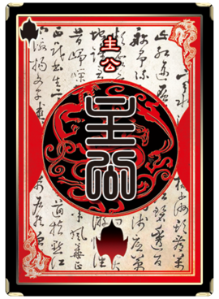
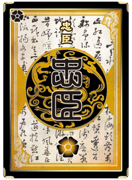
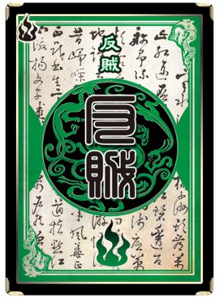
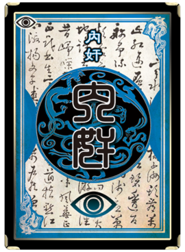

四大身份
| 主公 |
|  |
| 获胜条件：消灭所有反贼和内奸 |
| 技巧：以自己生存为首要目标，分散反贼注意力。 配合忠内剿灭反贼并判断谁是忠谁是内。 |
| 忠臣 |
|  |
| 获胜条件：保护主公存活的前提下消灭所有反贼和内奸 |
| 技巧：忠臣是主公的屏障，威慑反贼和内奸的天平。 |
| 反贼 |
|  |
| 获胜条件：杀死主公，推翻统治。 |
| 技巧：反贼是最简单也是最纠结的角色，说简单是因 为任务很简单只要杀到一个叫做主公的家伙就可以了， 说纠结是因为反贼人数众多，大家思路开阔难以统一。 配合方面需要注意的是，不能总想着让别人配合你 ，要想想怎么才能让别人理解你的想法，配合来自充分 的思考而非心有灵犀。 |
| 内奸 |
|  |
| 获胜条件：除掉除自己外所有的人，成为最后的生还者。 |
| 技巧：如果说局势是天平，忠臣是指针，那么内奸就是 游码。内奸以身份的特殊，获胜的难度和获胜后的超强成就 感一直深受大家喜爱。内奸打法多样，战术灵活，成功的内 奸=正确的战术+冷静的头脑+强悍的RP。 |